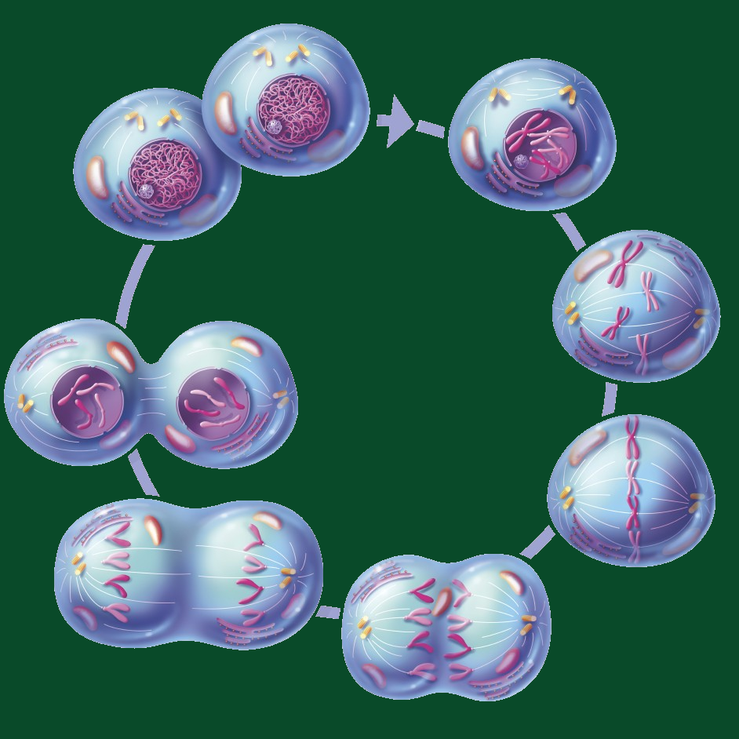

Mitosis is a fundamental cellular process that underpins the growth, development, and maintenance of
multicellular organisms. It is a tightly regulated mechanism by which a single eukaryotic cell divides
and gives rise to two genetically identical daughter cells. The process is integral to various
biological functions, such as tissue repair, growth, and replacement. Mitosis occurs in somatic cells
and plays a pivotal role in maintaining the consistent genetic makeup of cells within an organism.
The mitotic process consists of distinct stages, each with specific events. Prophase marks the
condensation of genetic material into visible chromosomes, accompanied by the dissolution of the nuclear
envelope. During metaphase, chromosomes align along the cell's equator, forming the metaphase plate.
Anaphase follows, characterized by the separation of sister chromatids, ensuring that each daughter cell
receives an identical set of genetic material. Telophase involves the reformation of nuclear envelopes
around separated chromatids, creating two distinct nuclei. Finally, cytokinesis completes the process by
physically dividing the cell into two daughter cells, each equipped with its nucleus and a complete set
of chromosomes.
The significance of mitosis extends beyond cellular division; it is a key player in maintaining genetic
stability. Any deviations or errors in this process can lead to genetic abnormalities, aneuploidy, or
conditions like cancer. The precision of mitosis ensures that genetic information is faithfully passed
on, contributing to the overall health and functionality of an organism. In summary, mitosis is a
sophisticated and vital mechanism that guarantees the accurate replication and distribution of genetic
material, supporting the intricate balance of life processes in multicellular organisms.
